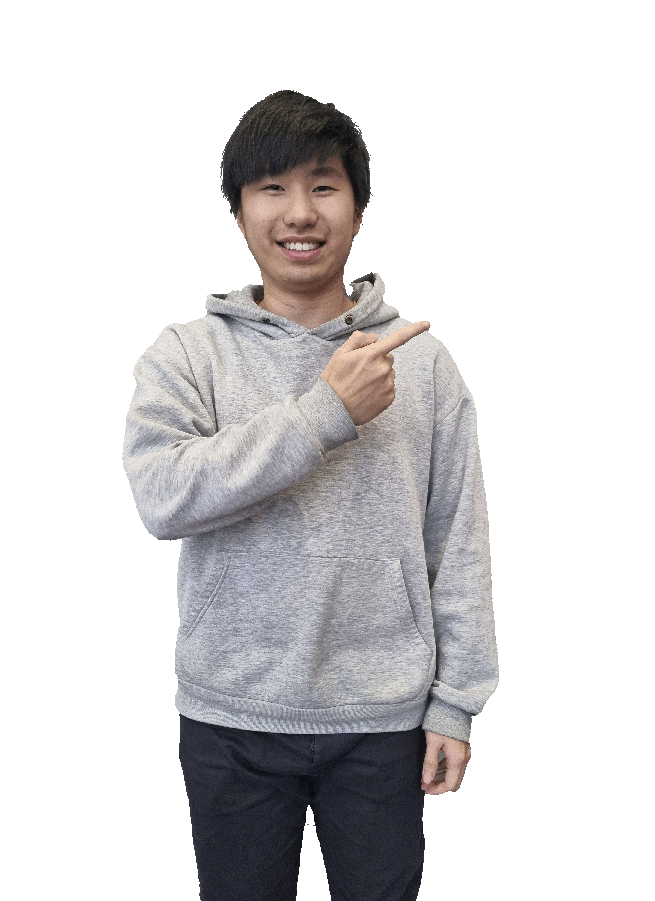
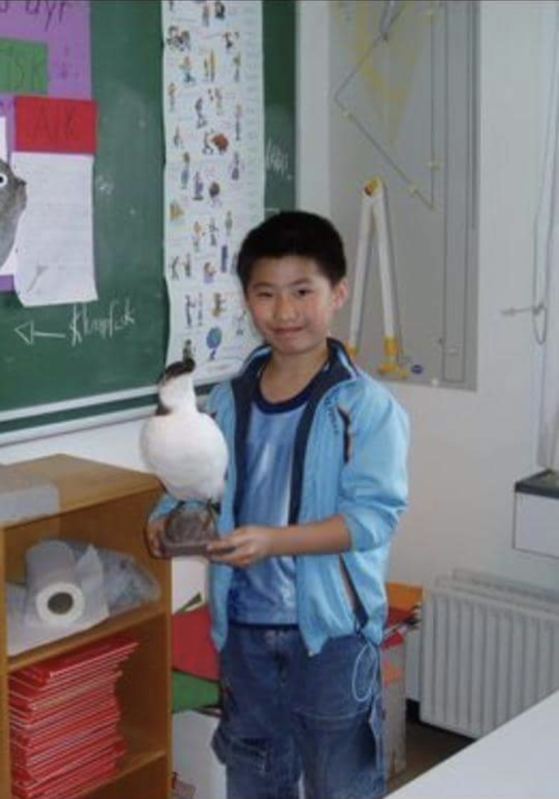

Jan Quoc Tran
UX/UI Designer
Jeg designer løsninger, der gør det nemt at komme
fra punkt A til B, med fokus på flow og funktion.
Lokation: Aalborg SV
Interesseret i at se noget af mit arbejde?

Hvem jeg er
Jeg er en dedikerede og arbejdsom person, der har interesse for nye idéer og oplevelser. Jeg sætter pris på kreativitet, godt samarbejde og mennesker, der får mig til at smile.
Jeg har interesse indenfor fodbold, og siden 1. klasse har mit kælenavn været ‘Lynkineseren’ på grund af min hurtighed på fodboldbanen.
Se "Om Jan" sidenSamarbejd med mig
I ethvert projekt med flere deltagere spiller samarbejde en afgørende rolle for, hvordan idéer udvikles og realiseres.
Leder du efter en front-end designer til et konkret projekt, ønsker hjælp til at forbedre brugeroplevelsen på din hjemmeside, eller udveksle idéer, så tag kontakt hos mig.
Se Kontakt side